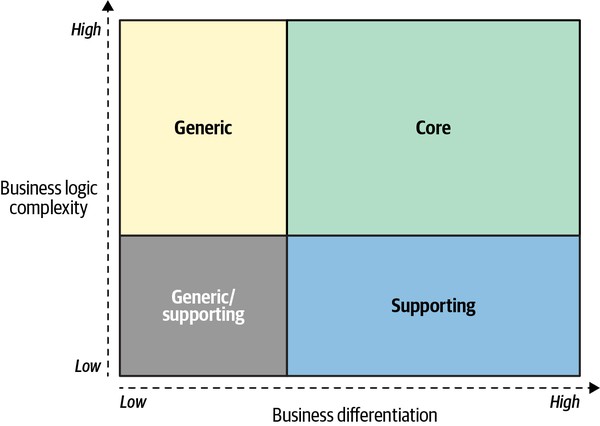
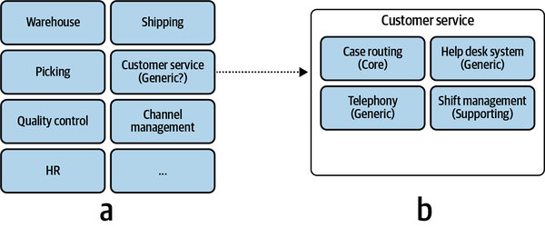
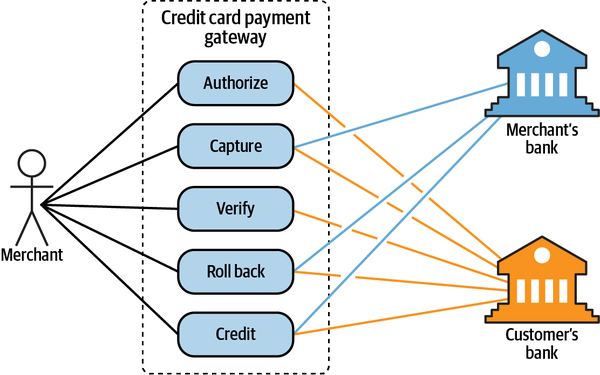
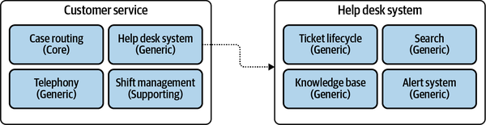

If you are anything like me, you love writing code: solving complex problems, coming up with elegant solutions, and constructing whole new worlds by carefully crafting their rules, structures, and behavior. I believe that’s what interested you in domain-driven design (DDD): you want to be better at your craft. This chapter, however, has nothing to do with writing code. In this chapter, you will learn how companies work: why they exist, what goals they are pursuing, and their strategies for achieving their goals.
When I teach this material in my domain-driven design classes, many students actually ask, “Do we need to know this material? We are writing software, not running businesses.” The answer to their question is a resounding “yes.” To design and build an effective solution, you have to understand the problem. The problem, in our context, is the software system we have to build. To understand the problem, you have to understand the context within which it exists—the organization’s business strategy, and what value it seeks to gain by building the software.
In this chapter, you will learn domain-driven design tools for analyzing a company’s business domain and its structure: its core, supporting, and generic subdomains. This material is the groundwork for designing software. In the remaining chapters, you will learn the different ways these concepts affect software design.
A business domain defines a company’s main area of activity. Generally speaking, it’s the service the company provides to its clients. For example:
FedEx provides courier delivery.
Starbucks is best known for its coffee.
Walmart is one of the most widely recognized retail establishments.
A company can operate in multiple business domains. For example, Amazon provides both retail and cloud computing services. Uber is a rideshare company that also provides food delivery and bicycle-sharing services.
It’s important to note that companies may change their business domains often. A canonical example of this is Nokia, which over the years has operated in fields as diverse as wood processing, rubber manufacturing, telecommunications, and mobile communications.
To achieve its business domain’s goals and targets, a company has to operate in multiple subdomains. A subdomain is a fine-grained area of business activity. All of a company’s subdomains form its business domain: the service it provides to its customers. Implementing a single subdomain is not enough for a company to succeed; it’s just one building block in the overarching system. The subdomains have to interact with each other to achieve the company’s goals in its business domain. For example, Starbucks may be most recognized for its coffee, but building a successful coffeehouse chain requires more than just knowing how to make great coffee. You also have to buy or rent real estate at effective locations, hire personnel, and manage finances, among other activities. None of these subdomains on its own will make a profitable company. All of them together are necessary for a company to be able to compete in its business domain(s).
Just as a software system comprises various architectural components—databases, frontend applications, backend services, and others—subdomains bear different strategic/business values. Domain-driven design distinguishes between three types of subdomains: core, generic, and supporting. Let’s see how they differ from a company strategy point of view.
A core subdomain is what a company does differently from its competitors. This may involve inventing new products or services or reducing costs by optimizing existing processes.
Let’s take Uber as an example. Initially, the company provided a novel form of transportation: ridesharing. As its competitors caught up, Uber found ways to optimize and evolve its core business: for example, reducing costs by matching riders heading in the same direction.
Uber’s core subdomains affect its bottom line. This is how the company differentiates itself from its competitors. This is the company’s strategy for providing better service to its customers and/or maximizing its profitability. To maintain a competitive advantage, core subdomains involve inventions, smart optimizations, business know-how, or other intellectual property.
Consider another example: Google Search’s ranking algorithm. At the time of this writing, Google’s advertising platform accounts for the majority of its profits. That said, Google Ads is not a subdomain, but rather a separate business domain with subdomains comprising it, among its cloud computing service (Google Cloud Platform), productivity and collaboration tools (Google Workspaces), and other fields in which Alphabet, Google’s parent company, operates. But what about Google Search and its ranking algorithm? Although the search engine is not a paid service, it serves as the largest display platform for Google Ads. Its ability to provide excellent search results is what drives traffic, and subsequently, it is an important component of the Ads platform. Serving suboptimal search results due to a bug in the algorithm or a competitor coming up with an even better search service will hurt the ad business’s revenue. So, for Google, the ranking algorithm is a core subdomain.
A core subdomain that is simple to implement can only provide a short-lived competitive advantage. Therefore, core subdomains are naturally complex. Continuing with the Uber example, the company not only created a new marketspace with ridesharing, it disrupted a decades-old monolithic architecture, the taxi industry, through targeted use of technology. By understanding its business domain, Uber was able to design a more reliable and transparent method of transportation. There should be high entry barriers for a company’s core business; it should be hard for competitors to copy or imitate the company’s solution.
It’s important to note that core subdomains are not necessarily technical. Not all business problems are solved through algorithms or other technical solutions. A company’s competitive advantage can come from various sources.
Consider, for example, a jewelry maker selling its products online. The online shop is important, but it’s not a core subdomain. The jewelry design is. The company can use an existing off-the-shelf online shop engine, but it cannot outsource the design of its jewelry. The design is the reason customers buy the jewelry maker’s products and remember the brand.
As a more intricate example, imagine a company that specializes in manual fraud detection. The company trains its analysts to go over questionable documents and flag potential fraud cases. You are building the software system the analysts are working with. Is it a core subdomain? No. The core subdomain is the work the analysts are doing. The system you are building has nothing to do with fraud analysis, it just displays the documents and tracks the analysts’ comments.
Generic subdomains are business activities that all companies are performing in the same way. Like core subdomains, generic subdomains are generally complex and hard to implement. However, generic subdomains do not provide any competitive edge for the company. There is no need for innovation or optimization here: battle-tested implementations are widely available, and all companies use them.
For example, most systems need to authenticate and authorize their users. Instead of inventing a proprietary authentication mechanism, it makes more sense to use an existing solution. Such a solution is likely to be more reliable and secure since it has already been tested by many other companies that have the same needs.
Going back to the example of a jewelry maker selling its products online, jewelry design is a core subdomain, but the online shop is a generic subdomain. Using the same online retail platform—the same generic solution—as its competitors would not impact the jewelry maker’s competitive advantage.
As the name suggests, supporting subdomains support the company’s business. However, contrary to core subdomains, supporting subdomains do not provide any competitive advantage.
For example, consider an online advertising company whose core subdomains include matching ads to visitors, optimizing the ads’ effectiveness, and minimizing the cost of ad space. However, to achieve success in these areas, the company needs to catalog its creative materials. The way the company stores and indexes its physical creative materials, such as banners and landing pages, does not impact its profits. There is nothing to invent or optimize in that area. On the other hand, the creative catalog is essential for implementing the company’s advertising management and serving systems. That makes the content cataloging solution one of the company’s supporting subdomains.
The distinctive characteristic of supporting subdomains is the complexity of the solution’s business logic. Supporting subdomains are simple. Their business logic resembles mostly data entry screens and ETL (extract, transform, load) operations; that is, the so-called CRUD (create, read, update, and delete) interfaces. These activity areas do not provide any competitive advantage for the company, and therefore do not require high entry barriers.
Now that we have a greater understanding of the three types of business subdomains, let’s explore their differences from additional angles and see how they affect strategic software design decisions.
Only core subdomains provide a competitive advantage to a company. Core subdomains are the company’s strategy for differentiating itself from its competitors.
Generic subdomains, by definition, cannot be a source for any competitive advantage. These are generic solutions—the same solutions used by the company and its competitors.
Supporting subdomains have low entry barriers and cannot provide a competitive advantage either. Usually, a company wouldn’t mind its competitors copying its supporting subdomains—this won’t affect its competitiveness in the industry. On the contrary, strategically the company would prefer its supporting subdomains to be generic, ready-made solutions, thus eliminating the need to design and build their implementation. You will learn in detail about such cases of supporting subdomains turning into generic subdomains, as well as other possible permutations, in Chapter 11. A real-life case study of such a scenario will be outlined in Appendix A.
The more complex the problems a company is able to tackle, the more business value it can provide. The complex problems are not limited to delivering services to consumers. A complex problem can be, for example, making the business more optimized and efficient. For example, providing the same level of service as competitors do, but at lower operational costs, is a competitive advantage as well.
From a more technical perspective, it’s important to identify the organization’s subdomains, because the different types of subdomains have different levels of complexity. When designing software, we have to choose tools and techniques that accommodate the complexity of the business requirements. Therefore, identifying subdomains is essential for designing a sound software solution.
Supporting subdomains’ business logic is simple. These are basic ETL operations and CRUD interfaces, and the business logic is obvious. Often, it doesn’t go beyond validating inputs or converting data from one structure to another.
Generic subdomains are much more complicated. There should be a good reason why others have already invested time and effort in solving these problems. These solutions are neither simple nor trivial. Consider, for example, encryption algorithms or authentication mechanisms.
From a knowledge availability perspective, generic subdomains are “known unknowns.” These are the things that you know you don’t know. Furthermore, this knowledge is readily available. You can either use industry-accepted best practices or, if needed, hire a consultant specializing in the area to help design a custom solution.
Core subdomains are complex. They should be as hard for competitors to copy as possible—the company’s profitability depends on it. That’s why strategically, companies are looking to solve complex problems as their core subdomains.
At times it may be challenging to differentiate between core and supporting subdomains. Complexity is a useful guiding principle. Ask whether the subdomain in question can be turned into a side business. Would someone pay for it on its own? If so, this is a core subdomain. Similar reasoning applies for differentiating supporting and generic subdomains: would it be simpler and cheaper to hack your own implementation, rather than integrating an external one? If so, this is a supporting subdomain.
From a more technical perspective, it’s important to identify the core subdomains whose complexity will affect software design. As we discussed earlier, a core subdomain is not necessarily related to software. Another useful guiding principle for identifying software-related core subdomains is to evaluate the complexity of the business logic that you will have to model and implement in code. Does the business logic resemble CRUD interfaces for data entry, or do you have to implement complex algorithms or business processes orchestrated by complex business rules and invariants? In the former case, it’s a sign of a supporting subdomain, while the latter is a typical core subdomain.
The chart in Figure 1-1 represents the interplay between the three types of subdomains in terms of business differentiation and business logic complexity. The intersection between the supporting and generic subdomains is a gray area: it can go either way. If a generic solution exists for a supporting subdomain’s functionality, the resultant subdomain type depends on whether it’s simpler and/or cheaper to integrate the generic solution than it is to implement the functionality from scratch.

As mentioned previously, core subdomains can change often. If a problem can be solved on the first attempt, it’s probably not a good competitive advantage—competitors will catch up fast. Consequently, solutions for core subdomains are emergent. Different implementations have to be tried out, refined, and optimized. Moreover, the work on core subdomains is never done. Companies continuously innovate and evolve core subdomains. The changes come in the form of adding new features or optimizing existing functionality. Either way, the constant evolution of its core subdomains is essential for a company to stay ahead of its competitors.
Contrary to the core subdomains, supporting subdomains do not change often. They do not provide any competitive advantage for the company, and therefore the evolution of a supporting subdomain provides a minuscule business value compared to the same effort invested in a core subdomain.
Despite having existing solutions, generic subdomains can change over time. The changes can come in the form of security patches, bug fixes, or entirely new solutions to the generic problems.
Core subdomains provide the company its ability to compete with other players in the industry. That’s a business-critical responsibility, but does it mean that supporting and generic subdomains are not important? Of course not. All subdomains are required for the company to work in its business domain. The subdomains are like foundational building blocks: take one away and the whole structure may fall down. That said, we can leverage the inherent properties of the different types of subdomains to choose implementation strategies to implement each type of subdomain in the most efficient manner.
Core subdomains have to be implemented in-house. They cannot be bought or adopted; that would undermine the notion of competitive advantage, as the company’s competitors would be able to do the same.
It would also be unwise to outsource the implementation of a core subdomain. It is a strategic investment. Cutting corners on a core subdomain is not only risky in the short term but can have fatal consequences in the long run: for example, unmaintainable codebases that cannot support the company’s goals and objectives. The organization’s most skilled talent should be assigned to work on its core subdomains. Furthermore, implementing core subdomains in-house allows the company to make changes and evolve the solution more quickly, and therefore build the competitive advantage in less time.
Since core subdomains’ requirements are expected to change often and continuously, the solution must be maintainable and easy to evolve. Thus, core subdomains require implementation of the most advanced engineering techniques.
Since generic subdomains are hard but already solved problems, it’s more cost-effective to buy an off-the-shelf product or adopt an open source solution than invest time and effort into implementing a generic subdomain in-house.
Lack of competitive advantage makes it reasonable to avoid implementing supporting subdomains in-house. However, unlike generic subdomains, no ready-made solutions are available. So, a company has no choice but to implement supporting subdomains itself. That said, the simplicity of the business logic and infrequency of changes make it easy to cut corners.
Supporting subdomains do not require elaborate design patterns or other advanced engineering techniques. A rapid application development framework will suffice to implement the business logic without introducing accidental complexities.
From a staffing perspective, supporting subdomains do not require highly skilled technical aptitude and provide a great opportunity to train up-and-coming talent. Save the engineers on your team who are experienced in tackling complex challenges for the core subdomains. Finally, the simplicity of the business logic makes supporting subdomains a good candidate for outsourcing.
Table 1-1 summarizes the aspects in which the three types of subdomains differ.
| Subdomain type | Competitive advantage | Complexity | Volatility | Implementation | Problem |
| Core | Yes | High | High | In-house | Interesting |
| Generic | No | High | Low | Buy/adopt | Solved |
| Supporting | No | Low | Low | In-house/outsource | Obvious |
As you can already see, identifying subdomains and their types can help considerably in making different design decisions when building software solutions. In later chapters, you will learn even more ways to leverage subdomains to streamline the software design process. But how do we actually identify the subdomains and their boundaries?
The subdomains and their types are defined by the company’s business strategy: its business domains and how it differentiates itself to compete with other companies in the same field. In the vast majority of software projects, in one way or another the subdomains are “already there.” That doesn’t mean, however, that it is always easy and straightforward to identify their boundaries. If you ask a CEO for a list of their company’s subdomains, you will probably receive a blank stare. They are not aware of this concept. Therefore, you’ll have to do the domain analysis yourself to identify and categorize the subdomains at play.
A good starting point is the company’s departments and other organizational units. For example, an online retail shop might include warehouse, customer service, picking, shipping, quality control, and channel management departments, among others. These, however, are relatively coarse-grained areas of activity. Take, for example, the customer service department. It’s reasonable to assume that it would be a supporting, or even a generic subdomain, as this function is often outsourced to third-party vendors. But is this information enough for us to make sound software design decisions?
Coarse-grained subdomains are a good starting point, but the devil is in the details. We have to make sure we are not missing important information hidden in the intricacies of the business function.
Let’s go back to the example of the customer service department. If we investigate its inner workings, we will see that a typical customer service department is composed of finer-grained components, such as a help desk system, shift management and scheduling, telephone system, and so on. When viewed as individual subdomains, these activities can be of different types: while help desk and telephone systems are generic subdomains, shift management is a supporting one, while a company may develop its ingenious algorithm for routing incidents to agents having success with similar cases in the past. The routing algorithm requires analyzing incoming cases and identifying similarities in past experience—both of which are nontrivial tasks. Since the routing algorithm allows the company to provide a better customer experience than its competitors, the routing algorithm is a core subdomain. This example is demonstrated in Figure 1-2.

On the other hand, we cannot drill down indefinitely, looking for insights at lower and lower levels of granularity. When should you stop?
From a technical perspective, subdomains resemble sets of interrelated, coherent use cases. Such sets of use cases usually involve the same actor, the business entities, and they all manipulate a closely related set of data.
Consider the use case diagram for a credit card payment gateway shown in Figure 1-3. The use cases are tightly bound by the data they are working with and the involved actors. Hence, all of the use cases form the credit card payment subdomain.
We can use the definition of “subdomains as a set of coherent use cases” as a guiding principle for when to stop looking for finer-grained subdomains. These are the most precise boundaries of the subdomains.

Should you always strive to identify such laser-focused subdomain boundaries? It is definitely necessary for core subdomains. Core subdomains are the most important, volatile, and complex. It’s essential that we distill them as much as possible since that will allow us to extract all generic and supporting functionalities and invest the effort on a much more focused functionality.
The distillation can be somewhat relaxed for supporting and generic subdomains. If drilling down further doesn’t unveil any new insights that can help you make software design decisions, it can be a good place to stop. This can happen, for example, when all of the finer-grained subdomains are of the same type as the original subdomain.
Consider the example in Figure 1-4. Further distillation of the help desk system subdomain is less useful, as it doesn’t reveal any strategic information, and a coarse-grained, off-the-shelf tool will be used as the solution.

Another important question to consider when identifying the subdomains is whether we need all of them.
Subdomains are a tool that alleviates the process of making software design decisions. All organizations likely have quite a few business functionalities that drive their competitive advantage but have nothing to do with software. The jewelry maker we discussed earlier in this chapter is but one example.
When looking for subdomains, it’s important to identify business functions that are not related to software, acknowledge them as such, and focus on aspects of the business that are relevant to the software system you are working on.
Let’s see how we can apply the notion of subdomains in practice and use it for making a number of strategic design decisions. I’m going to describe two fictitious companies: Gigmaster and BusVNext. As an exercise, while you are reading, analyze the companies’ business domains. Try to identify the three types of subdomains for each company. Remember that, as in real life, some of the business requirements are implicit.
Disclaimer: of course, we cannot identify all the subdomains involved in each business domain by reading such a short description. That said, it is enough to train you to identify and categorize the available subdomains.
Gigmaster is a ticket sales and distribution company. Its mobile app analyzes users’ music libraries, streaming service accounts, and social media profiles to identify nearby shows that its users would be interested in attending.
Gigmaster’s users are conscious of their privacy. Hence, all users’ personal information is encrypted. Moreover, to ensure that users’ guilty pleasures won’t leak out under any circumstances, the company’s recommendation algorithm works exclusively on anonymized data.
To improve the app’s recommendations, a new module was implemented. It allows users to log gigs they attended in the past, even if the tickets weren’t purchased through Gigmaster.
Gigmaster’s business domain is ticket sales. That’s the service it provides to its customers.
Gigmaster’s main competitive advantage is its recommendation engine. The company also takes its users’ privacy seriously and works only on anonymized data. Finally, although not mentioned explicitly, we can infer that the mobile app’s user experience is crucial as well. As such, Gigmaster’s core subdomains are:
Recommendation engine
Data anonymization
Mobile app
We can identify and infer the following generic subdomains:
Encryption, for encrypting all data
Accounting, since the company is in the sales business
Clearing, for charging its customers
Authentication and authorization, for identifying its users
Finally, the following are the supporting subdomains. Here the business logic is simple and resembles ETL processes or CRUD interfaces:
Integration with music streaming services
Integration with social networks
Attended-gigs module
Knowing the subdomains at play and the differences between their types, we can already make several strategic design decisions:
The recommendation engine, data anonymization, and mobile app have to be implemented in-house using the most advanced engineering tools and techniques. These modules are going to change the most often.
Off-the-shelf or open source solutions should be used for data encryption, accounting, clearing, and authentication.
Integration with streaming services and social networks, as well as the module for attended gigs, can be outsourced.
BusVNext is a public transportation company. It aims to provide its customers with bus rides that are comfortable, like catching a cab. The company manages fleets of buses in major cities.
A BusVNext customer can order a ride through the mobile app. At the scheduled departure time, a nearby bus’s route will be adjusted on the fly to pick up the customer at the specified departure time.
The company’s major challenge was implementing the routing algorithm. Its requirements are a variant of the “travelling salesman problem”. The routing logic is continuously adjusted and optimized. For example, statistics show the primary reason for canceled rides is the long wait time for a bus to arrive. So, the company adjusted the routing algorithm to prioritize fast pickups, even if that means delayed drop-offs. To optimize the routing even more, BusVNext integrates with third-party providers for traffic conditions and real-time alerts.
From time to time, BusVNext issues special discounts, both to attract new customers and to level the demand for rides over peak and off-peak hours.
BusVNext provides optimized bus rides to its customers. The business domain is public transportation.
BusVNext’s primary competitive advantage is its routing algorithm that takes a stab at solving a complex problem (“travelling salesman”) while prioritizing different business goals: for example, decreasing pickup times, even if it will increase overall ride lengths.
We also saw that the rides data is continuously analyzed for new insights into customers’ behaviors. These insights allow the company to increase its profits by optimizing the routing algorithm. Finally, BusVNext’s applications for its customers and its drivers have to be easy to use and provide a convenient user interface.
Managing a fleet is not trivial. Buses may experience technical issues or require maintenance. Ignoring these may result in financial losses and a reduced level of service.
Hence, BusVNext’s core subdomains are:
Routing
Analysis
Mobile app user experience
Fleet management
The routing algorithm also uses traffic data and alerts provided by third-party companies—a generic subdomain. Moreover, BusVNext accepts payments from its customers, so it has to implement accounting and clearing functionalities. BusVNext’s generic subdomains are:
Traffic conditions
Accounting
Billing
Authorization
The module for managing promos and discounts supports the company’s core business. That said, it’s not a core subdomain by itself. Its management interface resembles a simple CRUD interface for managing active coupon codes. Therefore, this is a typical supporting subdomain.
Knowing the subdomains at play and the differences between their types, we can already make a number of strategic design decisions:
The routing algorithm, data analysis, fleet management, and app usability have to be implemented in-house using the most elaborate technical tools and patterns.
Implementation of the promotions management module can be outsourced.
Identifying traffic conditions, authorizing users, and managing financial records and transactions can be offloaded to external service providers.
Now that we have a clear understanding of business domains and subdomains, let’s take a look at another DDD term that we will use often in the following chapters: domain experts. Domain experts are subject matter experts who know all the intricacies of the business that we are going to model and implement in code. In other words, domain experts are knowledge authorities in the software’s business domain.
The domain experts are neither the analysts gathering the requirements nor the engineers designing the system. Domain experts represent the business. They are the people who identified the business problem in the first place and from whom all business knowledge originates. Systems analysts and engineers are transforming their mental models of the business domain into software requirements and source code.
As a rule of thumb, domain experts are either the people coming up with requirements or the software’s end users. The software is supposed to solve their problems.
The domain experts’ expertise can have different scopes. Some subject matter experts will have a detailed understanding of how the entire business domain operates, while others will specialize in particular subdomains. For example, in an online advertising agency, the domain experts would be campaign managers, media buyers, analysts, and other business stakeholders.
In this chapter, we covered domain-driven design tools for making sense of a company’s business activity. As you’ve seen, it all starts with the business domain: the area the business operates in and the service it provides to its clients.
You also learned about the different building blocks required to achieve success in a business domain and differentiate the company from its competitors:
Finally, you learned that domain experts are the business’s subject matter experts. They have in-depth knowledge of the company’s business domain or one or more of its subdomains and are critical to a project’s success.
Which of the subdomains provide(s) no competitive advantage? Select all that apply.
Core
Generic
Supporting
B and C
A and C
For which subdomain might all competitors use the same solutions?
Core
Generic
Supporting
Which subdomain is expected to change the most often?
Core
Generic
Supporting
There is no difference in volatility of the different subdomain types.
Who are business domain experts?
Developers who specialize in a certain technology.
Managers who control the project resources.
Individual contributors who understand the business rules and processes.
The lead software architect of a project.